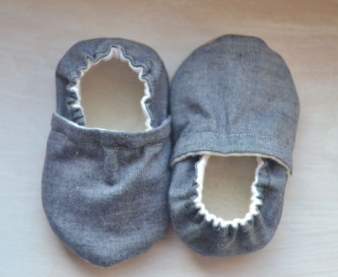
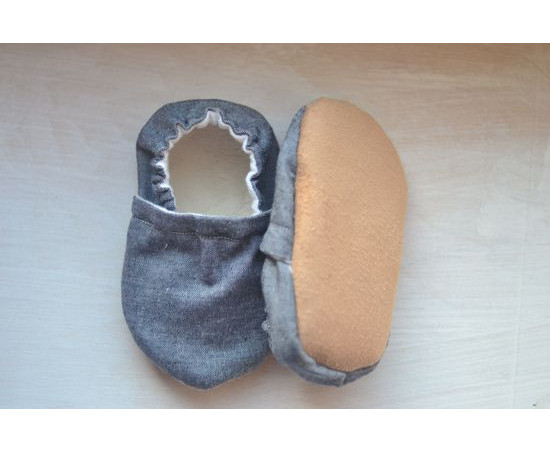
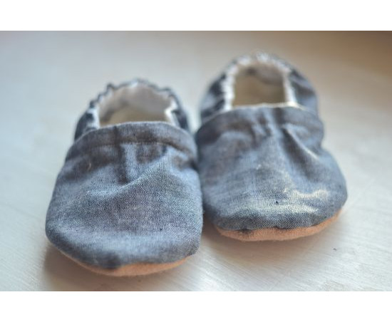
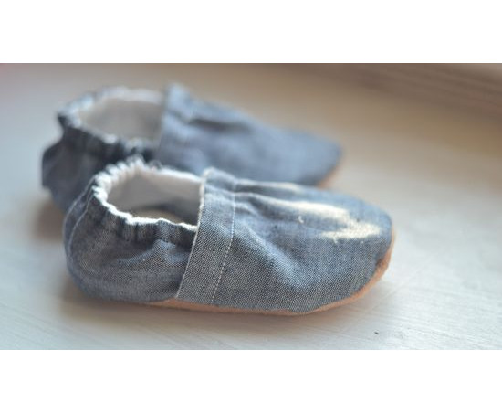
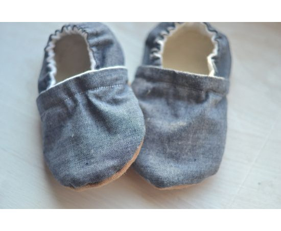
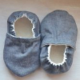
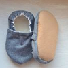
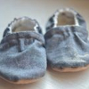
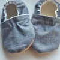

Grey linen shoes for baby Kids grey shoes Kids linen shoes Baby linen shoes Grey booties Grey baby booties Grey kids booties Grey clothing
USD 5.99
Local taxes included (where applicable).
Please select a size
Please select a material
Please select a quantity
Overview
- Handmade item
- Materials: linen, flannel, faux shepra
- Ships worldwide from Ukraine
Item details
Soft-soled baby shoes are made with designer 100% cotton fabric. On the inside, baby's feet cuddle into super soft 100% cotton flannel fabric. Fabric shepra covers the bottom of each shoe and an elastic ankle to ensure a snug fit.Booties are wonderful for keeping busy feet warm and cozy. Booties can be worn with or without socks.
The sole can be made from fabric or rubber. The sole is made from rubber which is soft, non-slip, and waterproof!
you can order the bandana bib with the same fabric
SIZE
Since each pair of booties are made individually, by hand, all measurements are approximate. For the best fit, measure baby's foot and add 1/4 to 1/2 inch for for room to wiggle and grow.
CARE
Machine washable, cold water with mild detergent, lay flat to dry.
Size cart
0-6 month size - 4.25 inches from toe to heel - US size 1 - Euro size 17
6-12 month size - 4.75 inches from toe to heel - US size 2-3 - Euro size 18
12-18 month size – 5.25 inches from toe to heel - US size 4 - Euro size 20
18-24 month size - 5.75 inches from toe to heel - US size 5 - Euro size 21